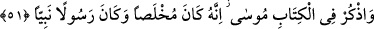
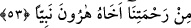

İHLÂSIN DERECELERİ
51. Kitap’ta Mûsâ’yı da an. Gerçekten o ihlâs sahibi kılınmış ve hem rasûl, hem
de nebî idi.
52. Ona Tûr’un sağ tarafından seslendik ve onu, özel konuşmak için (kendimize)
yaklaştırdık.
53. Ona, rahmetimizden dolayı kardeşi Hârun’u da peygamber olarak armağan
ettik.
“Kitapta Mûsâ’yı da an.” Burada Hz. Mûsâ’nın İsmail (a.s.)’dan önce zikredilmesi,
İsmail (a.s.)’ın Yâkub (a.s.)’la birlikte zikredilmesi içindir. “Gerçekten o ihlâs sahibi
kılınmış” Allah, onu kirlerden, noksanlıklardan ve kendi dışındakilerden (mâsivâ)
kurtarmıştı. “Muhlas (ihlâs sâhibi kılınan)”, sıddîkla aynı mânâyadır. İşâret ehli
demişlerdir ki: “Sâdık ve muhlis, aynı mânâyadır ki mutlak olarak nefsânî vasıfların
ayıplarından kurtulmaktır. Sıddîk ve muhlas da aynı mânâyadır ki gayrılık ayıplarından
kurtulmaktır.”
et-Te’vîlâtü’n-Necmiyye’de şöyle der: “Bil ki ubûdiyette ihlâs, velîlerin makâmıdır.
İhlâs sahibi (muhlis) olmayan hiçbir veli yoktur. Her ihlâslı kimse veli değildir. Nebi
olmayan hiçbir resûl yoktur. Fakat her nebî resûl değildir. Muhlis nefsini hayvânî,
nefsânî özelliklerden tezkiye edip temizleyerek kullukta arındıran, samimi hale getiren
kimsedir. Muhlas ise nefsini rabbânî, ruhânî vasıflarla süsleyerek (tahliye) tezkiye edip
temizledikten sonra Allâh’ın arındırıp samimi kıldığı kimsedir. Nitekim Hz. Peygamber
(a.s.) şöyle buyurmuştur: “Kırk sabah Allah için samîmî davranan kimsenin hikmet
menbâları (kaynakları) kalbinden diline çıkar, ulaşır.”[24]
Allah Teâlâ ise kudsî bir hadîste şöyle buyurmuştur: “İhlâs, Benimle kulum arasında
mukarreb
(yaklaştırılmış)
meleğin
ve
gönderilmiş
(mürsel)
peygamberin
kavrayamayacağı bir sırdır. Ben, cemâl ve celâl sıfatlarımın tecellîsiyle ihlâslı
kullarımın kalplerini süslemeyi üstlenirim.”[25]
Aslında sadece ihlâslı kimselerin kullukları kabul edilir. Çünkü Allah Teâlâ:
“Halbuki onlara ancak, dini yalnız O’na has kılarak Allâh’a kulluk etmeleri,
emrolunmuştu” (el-Beyyine, 98/5) buyurmuştur. İhlâslı kimselerin ihlâsının da çeşitli
mertebeleri vardır. Onun en alt derecesi, kulluğun sadece Allah için olması, Allâh’ın
hâricindekilerin onda bir ortaklığının bulunmamasıdır. Orta derecesi, kulun varlığını